1. Visually check for cracks and damage. Especially, inspect the important parts using liquid penetrant tester.
2. Check the oil passages for clogging.
3. Inspect the cylinder block surface that mates with cylinder head for warping by using a straight edge, and correct by grinding if necessary.
Warping limit:
0.025 mm (0.00098 in)
Grinding limit:
0.1 mm (0.004 in)
Standard height of cylinder block:
201.0 mm (7.91 in)
1. The cylinder bore size is stamped on the cylinder block front upper surface.
NOTE:
• Measurement should be performed at a temperature of 20°C (68°F).
• Standard sized pistons are classified into two grades, “A” and “B”. These grades should be used as guide lines in selecting a standard piston.
Standard diameter:
A: 99.505 — 99.515 mm (3.9175 — 3.9179 in)
B: 99.495 — 99.505 mm (3.9671 — 3.9175 in)
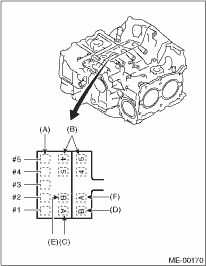
|
(A) |
Main journal size mark |
|
(B) |
Cylinder block (RH) — (LH) combination mark |
|
(C) |
#1 cylinder bore size mark |
|
(D) |
#2 cylinder bore size mark |
|
(E) |
#3 cylinder bore size mark |
|
(F) |
#4 cylinder bore size mark |
2. How to measure the inner diameter of each cylinder
Measure the inner diameter of each cylinder in both the thrust and piston pin directions at the heights as shown in the figure, using a cylinder bore gauge.
NOTE:
Measurement should be performed at a temperature of 20°C (68°F).
Cylindricality:
Standard:
0.015 mm (0.0006 in)
Service limit:
0.050 mm (0.0020 in)
Out-of-roundness:
Standard:
0.010 mm (0.0004 in)
Service limit:
0.050 mm (0.0020 in)
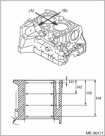
|
(A) |
Piston pin direction |
|
(B) |
Thrust direction |
|
H1 |
10 mm (0.39 in) |
|
H2 |
45 mm (1.77 in) |
|
H3 |
80 mm (3.15 in) |
|
H4 |
115 mm (4.53 in) |
3. When the piston is to be replaced due to general or cylinder wear, determine a suitable sized piston by measuring the piston clearance.
4. How to measure the outer diameter of each cylinder:
Measure the outer diameter of each piston at the height as shown in the figure. (Thrust direction)
NOTE:
Measurement should be performed at a temperature of 20°C (68°F).
Piston grade point H:
37.0 mm (1.457 in)
Standard:
A: 99.505 — 99.515 mm (3.9175 — 3.9179 in)
B: 99.495 — 99.505 mm (3.9171 — 3.9175 in)
0.25 mm (0.0098 in) oversize
99.745 — 99.765 mm (3.9270 — 3.9278 in)
0.50 mm (0.0197 in) oversize
99.995 — 100.015 mm (3.9368 — 3.9376 in)
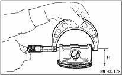
5. Calculate the clearance between cylinder and piston.
NOTE:
Measurement should be performed at a temperature of 20°C (68°F).
Cylinder to piston clearance at 20°C (68°F):
Standard:
−0.010 — 0.010 mm (−0.00039 — 0.00039 in)
Service limit:
0.030 mm (0.0012 in)
6. Boring and honing
(1) If any of the measured value of taper, out-of-roundness or cylinder-to-piston clearance is not within limits or if there is any damage on the cylinder wall, rebore it to use an oversize piston.
CAUTION:
• When any of the cylinders needs reboring, all other cylinders must be bored at the same time, and replaced with oversize pistons.
• Do not perform boring on one cylinder only. Do not replace only a single cylinder for an oversize piston.
(2) If the cylinder inner diameter exceeds the limit after boring and honing, replace the cylinder block.
Cylinder inner diameter limit:
To 100.005 mm (3.9372 in)
NOTE:
Immediately after reboring, the cylinder diameter may differ from its real diameter due to temperature rise. Thus, pay attention when measuring the cylinder diameter.
1. Check the pistons and piston pins for damage, cracks or wear, and the piston ring grooves for wear and damage. Replace if faulty.
2. Measure the piston-to-cylinder clearance at each cylinder.  If any of the clearances is not within the limit, replace the piston and bore the cylinder to enable use of an oversized piston.
If any of the clearances is not within the limit, replace the piston and bore the cylinder to enable use of an oversized piston.
3. Make sure that the piston pin can be inserted into the piston pin hole with fingers at 20°C (68°F). Replace if faulty.
Clearance between piston hole and piston pin:
Standard:
0.004 — 0.008 mm (0.0002 — 0.0003 in)
Service limit:
0.020 mm (0.0008 in)
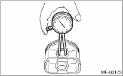
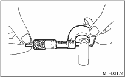
4. Check the snap ring installation groove (A) on the piston for burr. If necessary, remove burr from the groove so that the piston pin can lightly move.
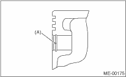
5. Check the piston pin snap ring for distortion, cracks and wear.
1. If the piston ring is broken, damaged or worn, or if its tension is insufficient, or when the piston is replaced, replace the piston ring with a new part of the same size as the piston.
NOTE:
• Marks are shown on the end of top and second rings. When installing them to piston, face this mark upward.
• Oil ring consists of the upper rail, expander and lower rail. Be careful about the direction of rail when installing the oil ring to piston.

|
(A) |
Upper rail |
|
(B) |
Expander |
|
(C) |
Lower rail |
2. Clean the piston ring groove and piston ring.
3. Squarely place the piston ring and oil ring in cylinder, and measure the piston ring gap with a thickness gauge.
|
Unit: mm (in) | ||||
|
Standard |
Limit | |||
|
Piston ring |
Top ring |
0.20 — 0.35 (0.0079 — 0.0138) |
1.0 (0.039) | |
|
Second ring |
0.37 — 0.52 (0.0146 — 0.0204) |
1.0 (0.039) | ||
|
Oil ring rail |
0.20 — 0.50 (0.0079 — 0.0197) |
1.5 (0.059) | ||
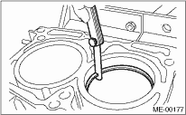
4. Measure the clearance between piston ring and piston ring groove with a thickness gauge.
NOTE:
Before measuring the clearance, clean the piston ring groove and piston ring.
|
Unit: mm (in) | |||
|
Standard |
Limit | ||
|
Clearance between piston ring and piston ring groove |
Top ring |
0.040 — 0.080 (0.0016 — 0.0031) |
1.5 (0.059) |
|
Second ring |
0.030 — 0.070 (0.0012 — 0.0028) |
1.5 (0.059) | |
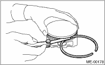
1. Replace the connecting rod, if the large or small end thrust surface is damaged.
2. Check for bend or twist using a connecting rod aligner. Replace the connecting rod if the bend or twist exceeds the limit.
Limit of bend or twist per 100 mm (3.94 in) in length:
0.10 mm (0.0039 in)
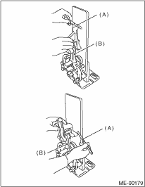
|
(A) |
Thickness gauge |
|
(B) |
Connecting rod |
3. Install the connecting rod fitted with bearing to crankshaft and measure the thrust clearance. If clearance is not within the limit value, replace the connecting rod.
Connecting rod thrust clearance:
Standard:
0.070 — 0.330 mm (0.0028 — 0.0130 in)
Service limit:
0.4 mm (0.016 in)
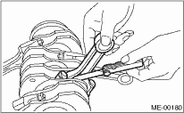
4. Inspect the connecting rod bearing for scar, peeling, seizure, melting, wear, etc.
5. Measure the oil clearance on each connecting rod bearing using plastigauge. If there is an oil clearance that is not within the limit, replace the defective bearing with a new standard or undersized bearing as necessary. (See the table below.)
Connecting rod oil clearance:
Standard:
0.016 — 0.044 mm (0.00063 — 0.0017 in)
Service limit:
0.05 mm (0.0020 in)
|
Unit: mm (in) | ||
|
Bearing |
Bearing size (Thickness at center) |
Outer diameter of crank pin |
|
Standard |
1.492 — 1.501 (0.0587 — 0.0591) |
51.984 — 52.000 (2.0466 — 2.0472) |
|
0.03 (0.0012) Undersize |
1.510 — 1.513 (0.0594 — 0.0596) |
51.954 — 51.970 (2.0454 — 2.0461) |
|
0.05 (0.0020) Undersize |
1.520 — 1.523 (0.0598 — 0.0600) |
51.934 — 51.950 (2.0446 — 2.0453) |
|
0.25 (0.0098) Undersize |
1.620 — 1.623 (0.0638 — 0.0639) |
51.734 — 51.750 (2.0368 — 2.0374) |
6. Inspect the bushing at connecting rod small end, and replace if worn or damaged. Also measure the piston pin clearance at connecting rod small end.
Clearance between piston pin and bushing:
Standard:
0 — 0.022 mm (0 — 0.0009 in)
Service limit:
0.030 mm (0.0012 in)
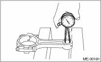
7. Replacement procedure is as follows.
(1) Remove the bushing from connecting rod with ST and press.
(2) Press the bushing with the ST after applying oil on the periphery of new bushing.
| ST 499037100 | CONNECTING ROD BUSHING REMOVER AND INSTALLER |
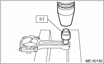
(3) Make two holes with 3 mm (0.12 in) diameter on the pressed-fit bushing so that the they match with the machined hole of the connecting rod. Then ream the inside of bushing.
(4) After completion of reaming, clean the bushing to remove chips.
6. CRANKSHAFT AND CRANKSHAFT BEARING
1. Clean the crankshaft completely, and check it for cracks using liquid penetrant tester. Replace if faulty.
2. Measure the bend of crankshaft. If it exceeds the limit, correct or replace it.
NOTE:
If a suitable V-block is not available, install #1 and #5 crankshaft bearing on cylinder block, position the crankshaft on these bearings, and then measure the crankshaft bend using a dial gauge.
Crankshaft bend limit:
0.035 mm (0.0014 in)
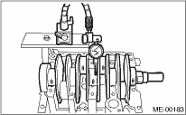
3. Inspect the crank journal and crank pin for wear. If they are not within the standard value, replace the bearing with a suitable (undersize) one, and replace or readjust crankshaft as necessary. When grinding the crank journal or crank pin, finish them to the specified dimensions according to the undersize bearing to be used.
Crank pin:
Out-of-roundness
0.003 mm (0.0001 in)
Cylindricality
0.004 mm (0.0002 in)
Grinding limit:
To 51.750 mm (2.0374 in) dia.
Crank journal:
Out-of-roundness
0.005 mm (0.0002 in)
Cylindricality
0.006 mm (0.0002 in)
Grinding limit:
To 59.758 mm (2.3527 in) dia.
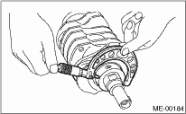
|
Unit: mm (in) | ||||
|
Crank journal outer diameter |
Crank pin outer diameter | |||
|
#1, #3 |
#2, #4, #5 | |||
|
Standard |
Journal O.D. |
59.992 — 60.008 (2.3619 — 2.3625) |
59.992 — 60.008 (2.3619 — 2.3625) |
51.984 — 52.000 (2.0466 — 2.0472) |
|
Bearing size (Thickness at center) |
1.998 — 2.011 (0.0787 — 0.0792) |
2.000 — 2.013 (0.0787 — 0.0793) |
1.492 — 1.501 (0.0587 — 0.0591) | |
|
0.03 (0.0012) Undersize |
Journal O.D. |
59.962 — 59.978 (2.3607 — 2.3613) |
59.962 — 59.978 (2.3607 — 2.3613) |
51.954 — 51.970 (2.0454 — 2.0461) |
|
Bearing size (Thickness at center) |
2.017 — 2.020 (0.0794 — 0.0795) |
2.019 — 2.022 (0.0795 — 0.0796) |
1.510 — 1.513 (0.0594 — 0.0596) | |
|
0.05 (0.0020) Undersize |
Journal O.D. |
59.942 — 59.958 (2.3599 — 2.3605) |
59.942 — 59.958 (2.3599 — 2.3605) |
51.934 — 51.950 (2.0446 — 2.0453) |
|
Bearing size (Thickness at center) |
2.027 — 2.030 (0.0798 — 0.0799) |
2.029 — 2.032 (0.0799 — 0.0800) |
1.520 — 1.523 (0.0598 — 0.0600) | |
|
0.25 (0.0098) Undersize |
Journal O.D. |
59.742 — 59.758 (2.3520 — 2.3527) |
59.742 — 59.758 (2.3520 — 2.3527) |
51.734 — 51.750 (2.0368 — 2.0374) |
|
Bearing size (Thickness at center) |
2.127 — 2.130 (0.0837 — 0.0839) |
2.129 — 2.132 (0.0838 — 0.0839) |
1.620 — 1.623 (0.0638 — 0.0639) | |
4. Use a thickness gauge to measure the thrust clearance of crankshaft at center bearing. If the thrust clearance exceeds the limit, replace the bearing.
Crankshaft thrust clearance:
Standard:
0.030 — 0.115 mm (0.0012 — 0.0045 in)
Service limit:
0.25 mm (0.0098 in)
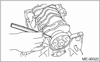
5. Inspect individual crankshaft bearings for signs of flaking, seizure, melting and wear.
6. Measure the oil clearance on each crankshaft bearing using plastigauge. If the measurement exceeds the limit, replace the defective bearing with an undersize one, and replace or recondition the crankshaft as necessary.
Crankshaft oil clearance:
Standard:
0.010 — 0.030 mm (0.0004 — 0.0012 in)
Service limit:
0.040 mm (0.0016 in)